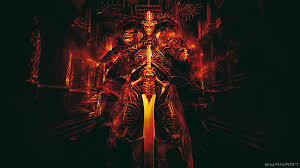
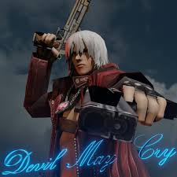
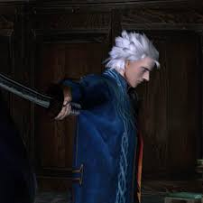
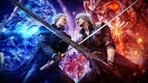

A Lenda de Sparda
Há milhares de anos, o lendário demônio Sparda se rebelou contra o mundo demoníaco para proteger a humanidade. Ele derrotou inúmeros demônios e selou o portal que ligava o inferno ao mundo humano.
Após a guerra, Sparda viveu entre os humanos, construiu uma família e teve dois filhos: Dante e Vergil.

Dante
Dante cresceu se tornando um caçador de demônios extremamente poderoso. Dono de um estilo irreverente, ele combate criaturas demoníacas utilizando espadas, pistolas e seus poderes herdados de Sparda.
Sua agência recebe o nome de Devil May Cry, onde aceita missões para eliminar ameaças demoníacas.

Vergil
Diferente de Dante, Vergil acredita que o poder absoluto é a única maneira de evitar sofrimento. Em busca de força, ele trilha um caminho sombrio e frequentemente entra em conflito com seu irmão.
Sua espada Yamato possui o poder de cortar dimensões e separar o mundo humano do demoníaco.

Devil May Cry 5
Em Devil May Cry 5, uma gigantesca árvore demoníaca surge na cidade Red Grave. Dante, Nero e o misterioso V precisam enfrentar o rei demônio Urizen para impedir a destruição do mundo humano.
O jogo apresenta batalhas épicas, narrativa intensa e o reencontro entre Dante e Vergil.